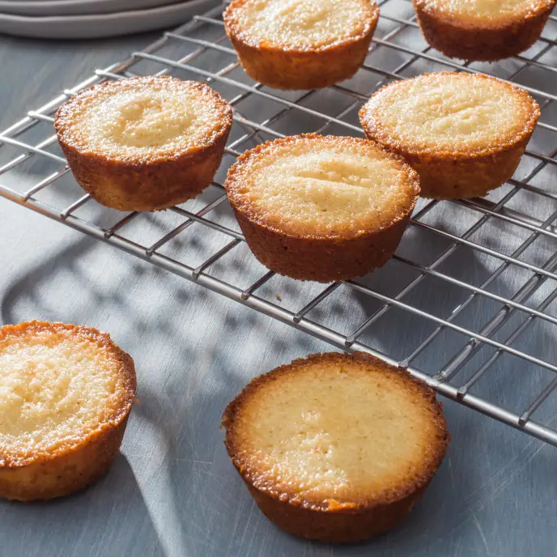

Fantastic French Financiers

Description
French financiers are a a classic bite-sized browned butter almond tea cake
that you often find in a French patisserie.
The exterior is crispy with
a delicate, buttery and nutty interior from browning the butter!
About Financiers
Financiers...[insert history]
Ingredients
- Unsalted Butter (115g)
- Powdered Sugar (150g)
- Almond Flour (125g)
- All-Purpose Flour (45 g)
- Egg-Whites (from 4 large eggs)
- Salt (2g)
- Vanilla Extract (2 tsp)
Steps
- Hydrate the Yeast
Warm the milke to 110-115°F (43-46°C). This can be done on the stove
or in the microwave.
It should take about 30-45 seconds in the
microwave. Sprinkle the yeast over the milk and stir to activate.
NOTE: Make sure the milk is not too hot or it will kill the yeast!
- Add the Butter, Sugar, Salt and Eggs
In a large mixing bowl or the bowl of a stand mixer, stir together
the cooled butter, sugar, eggs and salt
with a spoon or a rubber spatula.
- Add the Milk/Yeast
Stir in the milk/yeast mixture.
- Add the Flour
Stir in the flour until it is hydrated. The dough will be shaggy at this point.
- Knead the Dough
This dough can be kneaded by hand or with the dough hook of a stand mixer. If kneading
by hand, lightly flour
a work surface and knead the dough for about 8 minutes, until
it is smooth and elastic. The dough will be
very sticky to start, but will become
less sticky as it is kneaded. If kneading in the stand mixer, knead
at medium/high
speed for about 6 minutes, stopping about halfway through to scrape the bottom of the bowl.
- Ferment the Dough>
Transfer the dough to a clean bowl. Lightly spray the dough with oil and cover the bowl
with a towel or plastic
wrap. Let the dough ferment at room temperature until doubled
in size. This will take about 30-45 minutes if
you used quick rise yeast and 1-2 hours
if active dry yeast was used. A warm spot will speed up the fermentation time.
- Deflate the Dough
Deflate the air out of the dough by pressing down on it in the center and bringing the edges
of the dough over the top.
- Knead in the Pearl Sugar
Flatten the dough out on a lightly floured work surface and add the pearl sugar. Knead the
pearl sugar into the dough
until evenly distrubted. Alternatively, you can knead the
sugar into the dough in a stand mixer with a dough hook.
- Divide and Rest the Dough
Divide the dough into roughly 12 pieces and cover with a piece of plastic wrap. Let the
dough rest for 10 minutes
while the waffle iron heats up.
- Cook the Waffles
All waffle irons are different so start your iron on a low temperature. Increase
the temperature a little
at a time to find the setting that will caramelize your
sugar. Spray the iron with non-stick spray and
put a piece of dough in the center
of the waffle iron and close it. The waffle will puff up as it cooks.
Cook until golden brown.
- Bask in the Glory of Your Liege Waffles!!!